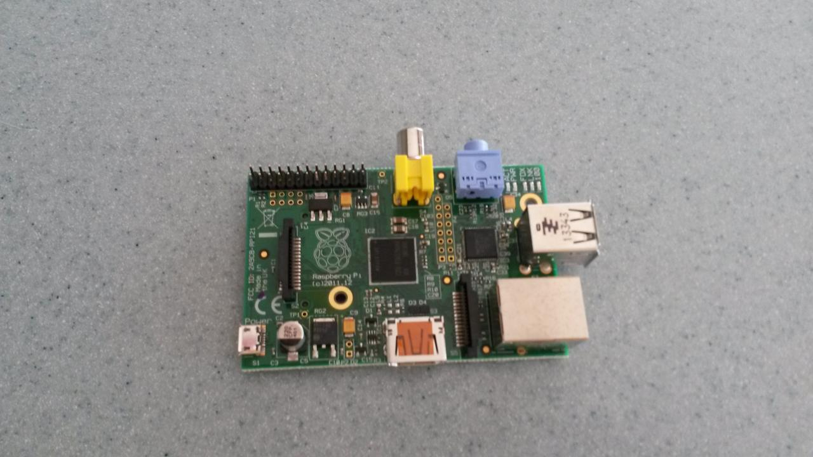
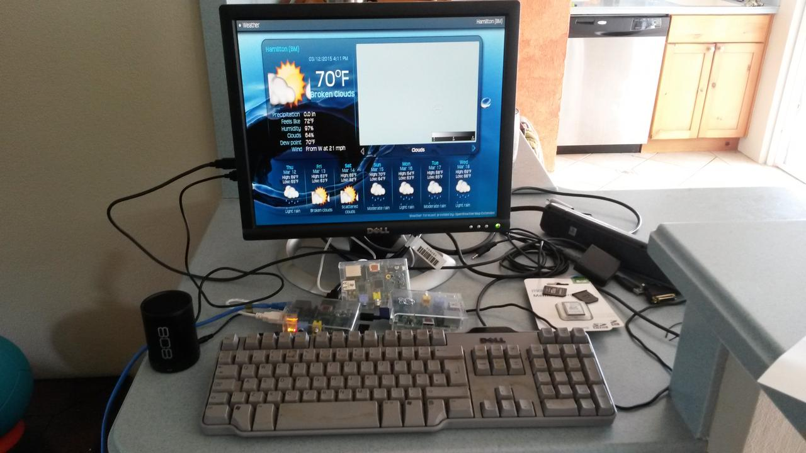

Pi Day at Chewstick
This Saturday the date is 3.14.15, March 14th, '15.
March 14th has become known as Pi Day, on account of the fact that the first three digits of the mathematical constant pi.
This year it is extra special, since the next two digits are 15, which corresponds to the year. After that, the next five digits of pi are 9:26:53.
To mark the occasion Chewstick at the new premises on 81 Front St is hosting a Raspberry Pi Day.
A raspberry pi is a $30 computer (Raspberry Pi) that runs off a phone charger. We will be making videos of people performing, playing games etc, so bring your camera, SD card, instruments to contribute your content as we build a Raspberry Pi media centre.
We will also have a retro games console running on a pi.
The plan is to start the event at 9:26:53am and run with it until 9:26:53pm.
I have three working raspberry pi's and some SD cards that can be used to host the operating system.
I have one pi running the Kodi media centre that I hope to add some Chewstick and Bermuda content to. The image below shows Kodi displaying the Bermuda weather.
I have another pi running a retro games console and a third running the Raspian operating system.
There is no need to bring anything but yourself to the event, but if you do have raspberry pi's or related hardware it would be good to bring them along too.
All going well, we will also have actual pies to eat too :)
For more information see this facebook posting.
Comments
Comments powered by Disqus